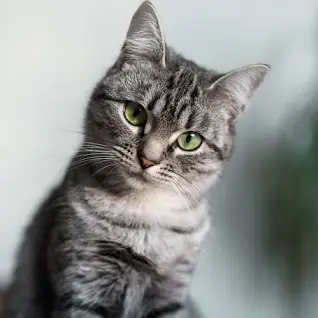
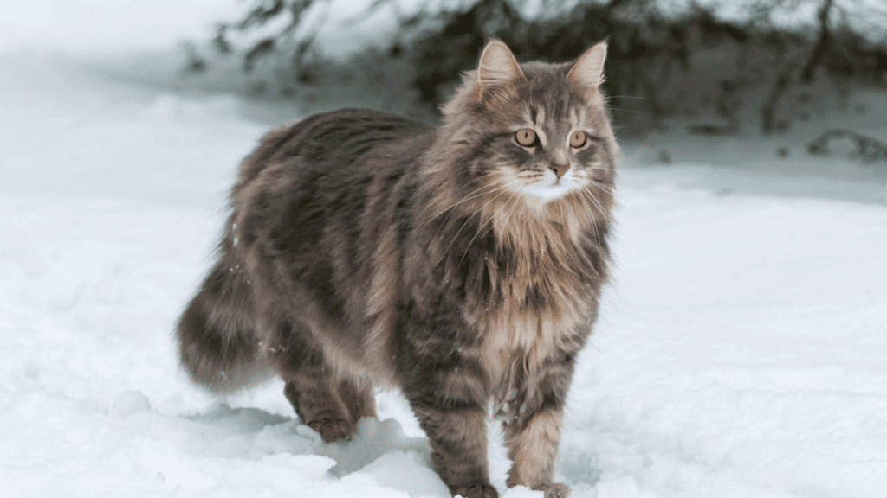
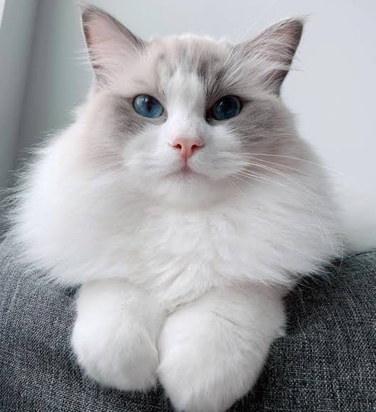

¡Nos Encantan Los Gatos!
Aquí tienes todo lo que necesitas saber sobre ellos.
Galería de Gatos







Información sobre Gatos
Los gatos son animales adorables y cariñosos. Les encanta dormir, jugar y recibir caricias. Son mascotas maravillosas que alegran nuestros días.
Existen muchas razas de gatos, cada una con sus propias características únicas. Algunas de las razas más populares incluyen Siameses, Persas, Maine Coons y Bengales.
Categorías de Gatos
- Gatos domésticos
- Gatos de raza
- Gatos callejeros
- Gatos salvajes
Cuidado de los Gatos
Es importante cuidar bien a nuestros amigos felinos. Aquí hay algunos consejos para mantener a tu gato feliz y saludable:
- Proporciona una dieta equilibrada y agua fresca.
- Proporciona un ambiente seguro y cómodo en casa.
- Proporciona ejercicio y juguetes para mantener a tu gato activo.
- Programa visitas regulares al veterinario para chequeos de salud.
- Mantén al día las vacunas y desparasitaciones de tu gato.